Mirrors do more than reflect a face on the way out the door. Used well, they transform a space, adding depth, bouncing light around, and making a room look considerably more expensive than it actually was to put together.
Mirror wall panelling in particular does two jobs at once: it's decorative, but it's also genuinely functional, tricking the eye into reading a room as bigger and brighter than its actual square footage. The shift from a plain wall to a mirrored one can be dramatic enough that a room goes from merely cozy to something that reads as a different space entirely.

A Few Things Worth Knowing First
Balance matters more than anything else on this list. Too many mirrored surfaces can tip a room from elegant into something closer to a funhouse, so picking one or two walls rather than every surface keeps it feeling intentional. Placement matters just as much, a mirror angled to catch natural light or highlight a nice feature does more work than one that just reflects clutter back into the room.
If a full mirrored wall feels like too much commitment, mixing mirror with wood, marble, or metal trim gets most of the same effect with a softer landing. And it's worth remembering that mirrors show fingerprints and dust quickly, an antique or bevelled finish tends to hide that better than a flawless, glossy one.
15 Mirror Wall Panelling Ideas
1. Mixed-Material Mirror Panelling
Combining mirror with other materials, carved wood, aged metal, marble, gives a wall the reflective benefits of mirror without committing to an all-glass look.
An ornately carved frame mixing gold and dark tones, like the kind found in antique mirror designs, shows how texture and reflection can share one piece.
It's often the option people end up loving most, since it feels less intimidating than a full mirrored wall while still delivering real visual interest.
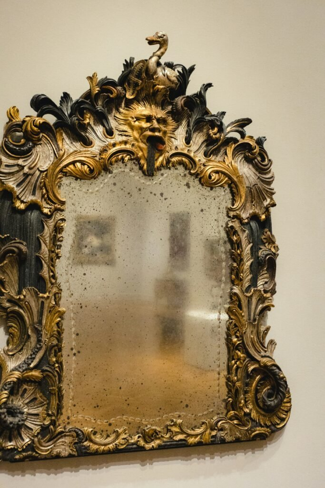
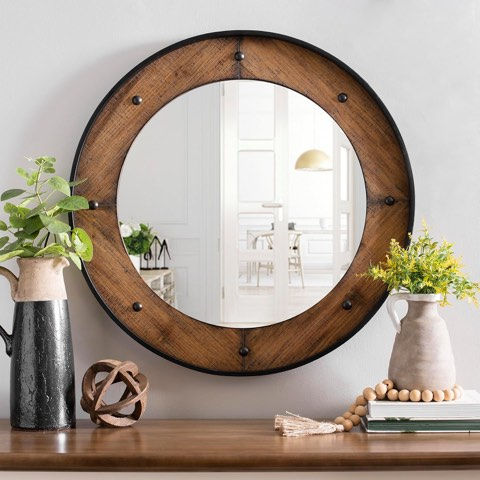
Rustic Round Wall Mirror, 24 Inch, Natural Wood Frame with Black Metal Trim
Shop on Amazon2. Mirrored Bathroom Panelling
Bathrooms and mirrors already go hand in hand, and taking that further than a single mirror over the sink elevates the whole room.
An ornate scalloped-frame mirror paired with brass fixtures shows how far a single well-chosen statement mirror can carry a small bathroom on its own.
In a compact bathroom especially, the added reflection opens up the space and gives it a noticeably more boutique, hotel-like feel.
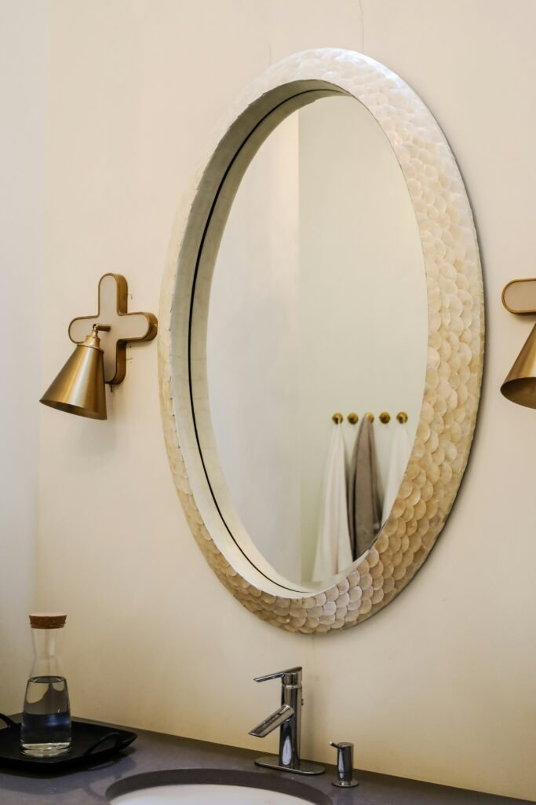
3. Mirrored Wall Niche Panelling
A wall niche that usually collects dust or random clutter becomes a mini display gallery once it's backed with mirror panels.
The mirrored backing gives depth and extra presence to whatever gets displayed inside, plants, vases, or a small piece of art.
It also reflects light into what's typically a dim corner, making the whole nook feel considerably more finished and intentional.
4. Mirrored Fireplace Surround
Framing a fireplace in mirror panelling turns the whole area into even more of a focal point than the fire alone already is.
The firelight reflects across the room, doubling the cozy effect without adding any extra light fixtures.
Keeping the framing sleek is what keeps this from looking tacky, done with restraint, it reads as a genuine designer feature.
5. Diamond and Geometric Mirror Panelling
Arranging mirror segments diagonally instead of in a standard grid gives a wall a faceted, almost jewel-like quality.
A geometric mirror with gold lines radiating across the glass in angular segments captures the same effect in a single piece.
It pairs beautifully with a chandelier or pendant light nearby, since the facets catch and scatter that light in a way a flat mirror never could.
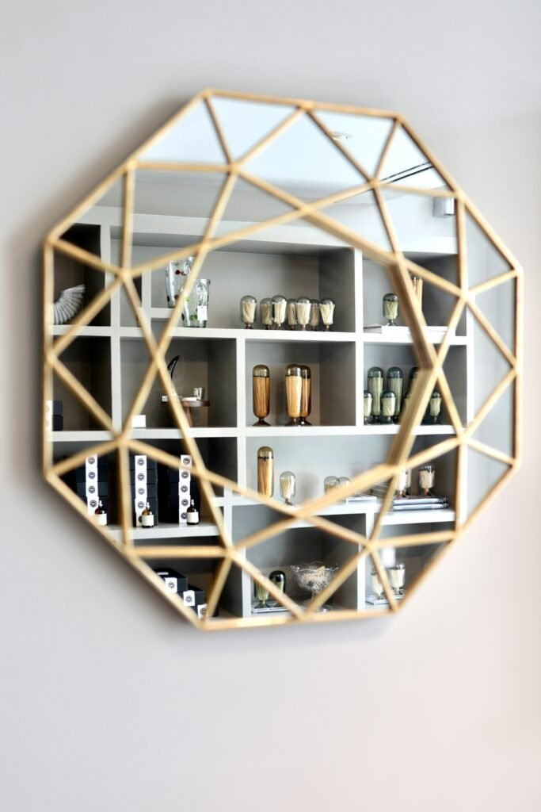
6. Etched Mirror Panels
An etched mirror carries a decorative pattern cut directly into the glass, florals, geometrics, or something fully custom.
It works as art and function at once, which makes it a strong choice for a statement wall in a living room or bedroom.
A monogram or personal detail etched into the design turns it from simply decorative into something that feels genuinely specific to the home.
7. Backlit Mirror for a Soft Glow
Light built directly around or behind a mirror creates a soft glow that reads as considerably more luxurious than a plain mirror lit from elsewhere in the room.
A mirror ringed with warm bulbs, like a classic vanity setup, delivers that same glow in a more approachable, ready-made form.
It works especially well in a bedroom or bathroom, adding ambient light even when the room's main fixtures are switched off.
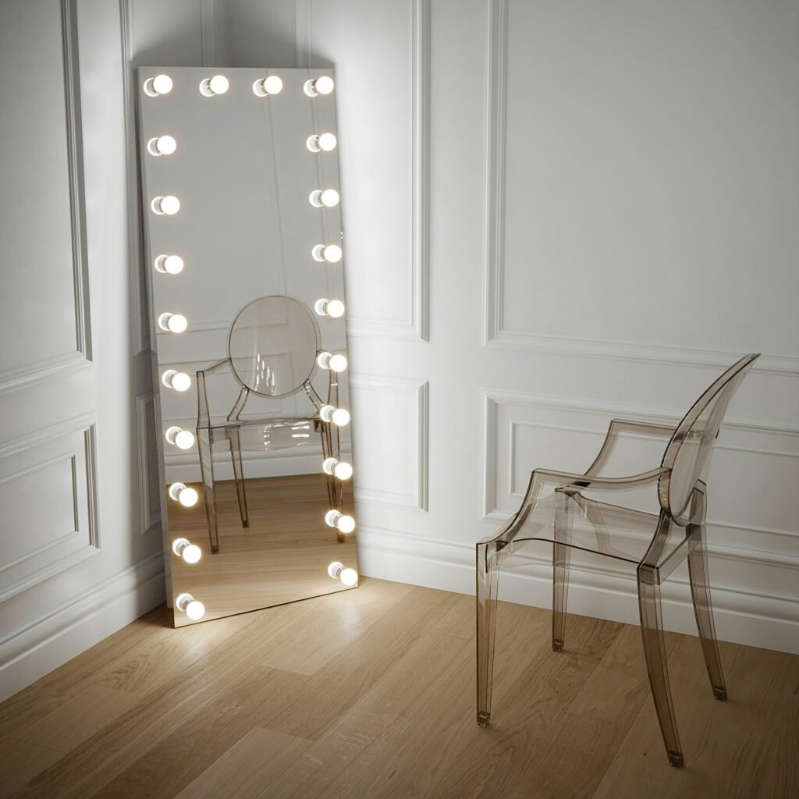
8. Mirrored Closet Wall Panelling
Covering closet doors with mirrored panels solves two problems at once, no separate full-length mirror needed, and the bedroom instantly reads as bigger and brighter.
It's a strong fix for a bedroom that feels a little tight, since the mirrored surface reflects whatever light is already in the room.
It also makes getting dressed considerably easier, with no more walking back and forth to a mirror in another room for a final check.
9. Gold-Trimmed Mirror Panelling
Thin strips of gold running between mirrored sections give a wall an Art Deco quality without going fully gold.
An ornate gold-carved frame around a single statement mirror delivers the same effect on a smaller scale, glamorous without tipping into excessive.
It pairs especially well with warm lighting and jewel tones, and works beautifully in a dining room, primary bedroom, or dressing area.
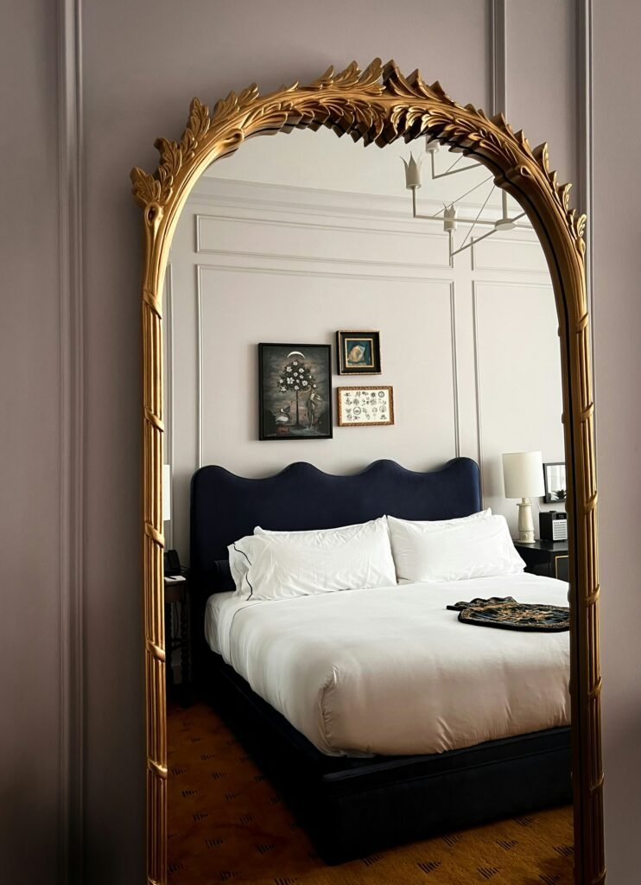
10. Chevron-Pattern Mirror Panelling
For anyone who finds plain mirror panels too predictable, a chevron layout shakes things up with mirrored strips cut at an angle and arranged in a zig-zag.
It suits a living room or entryway where the goal is for guests to actually notice the wall, rather than blending quietly into the background.
Used as a single feature wall rather than covering an entire room, it adds movement and depth without becoming distracting.
11. Bevelled Edges for Quiet Glamour
A bevelled mirror catches and scatters light differently than a flat-edged one, adding a subtle sparkle without demanding attention.
It works like jewelry for a room, understated most of the time, until the light hits it just right and it suddenly stands out.
An ornate scalloped or carved frame paired with a bevelled edge suits an entryway or a spot near a window where natural light moves throughout the day.
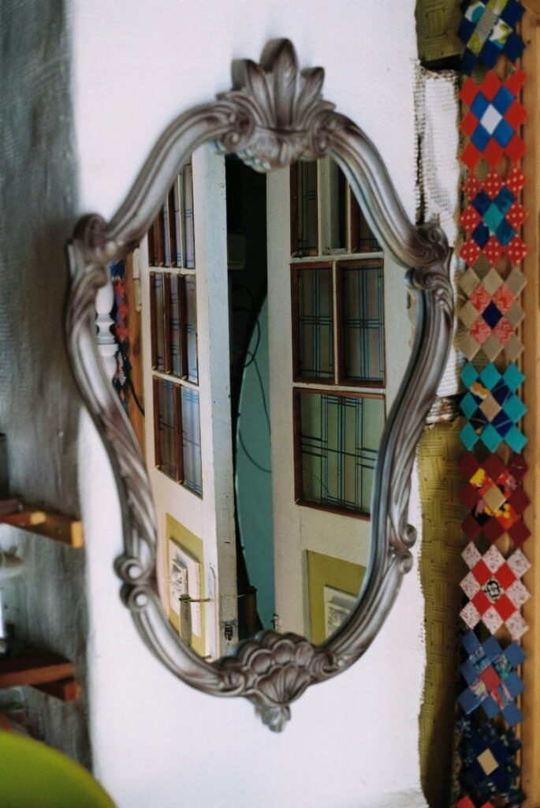

12. Mirror Framed in Warm Wood
Breaking up an all-mirror look with a warm wood frame balances the shine with something grounded and tactile.
It suits a living room or bedroom in earthy tones especially well, softening a material that can otherwise read as cold.
Anyone who finds mirrors feel a little clinical on their own tends to respond best to this pairing, cozy without losing any of the elegance.
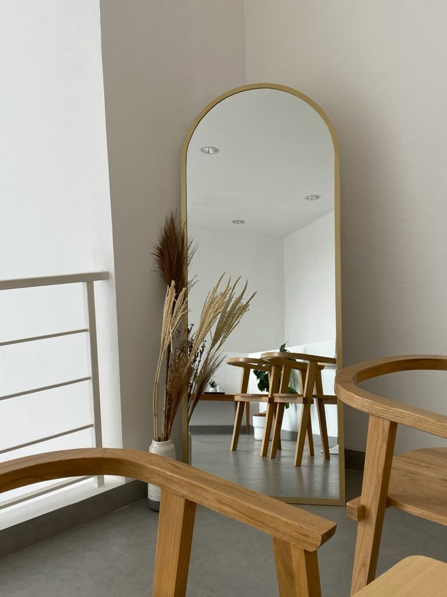
13. Antique Mirror With a Smoky Finish
An antique mirror trades a perfectly clean reflection for a mottled, smoky finish that adds real character instead.
It suits a bedroom or a cozy reading corner especially well, feeling softer and less clinical than a flawless modern mirror ever could.
The texture also hides fingerprints and smudges better than glossy glass, which is a quiet practical bonus on top of the vintage charm.
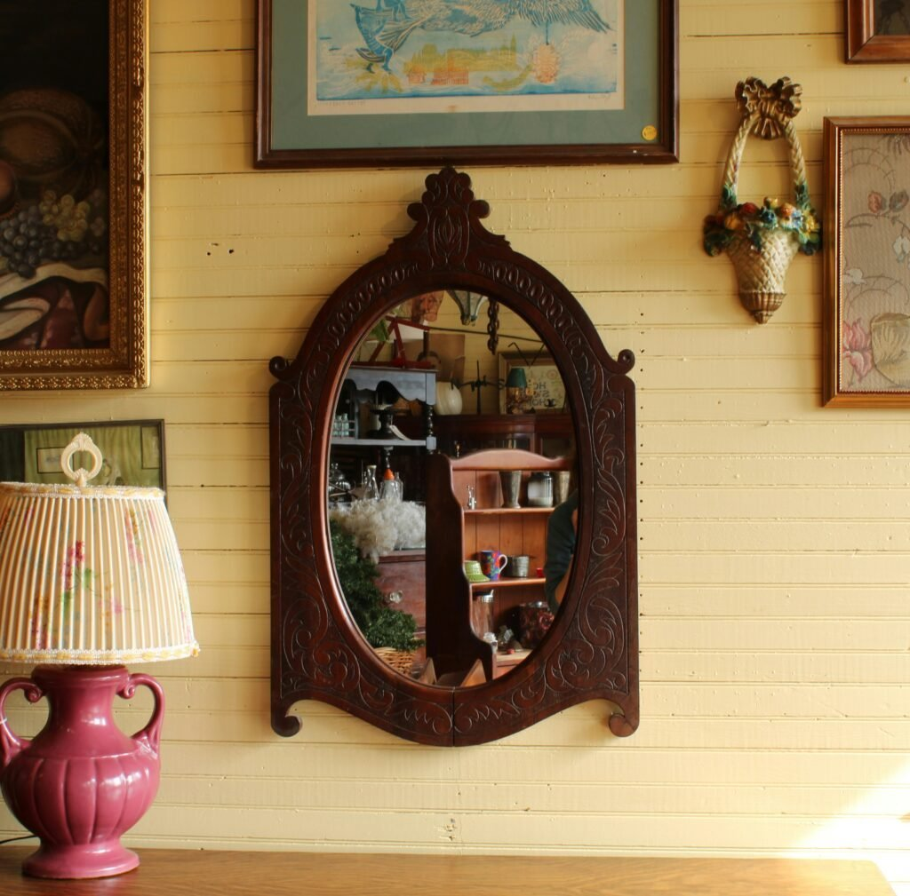
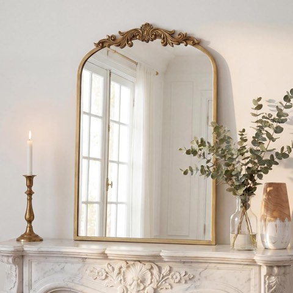
PERFNIQUE Vintage Gold Arched Antique Baroque Wall Mirror, 35 x 24 Inch
Shop on Amazon14. Grid-Style Mirror Panelling
Instead of one large reflective surface, grid-style panelling breaks the mirror into sections with clean, windowpane-style lines running across the wall.
The structure works especially well in a dining room or home office, where the segmented look reads as considered rather than like mirrors were added just to make the room feel bigger.
It keeps reflections controlled instead of turning into one continuous sheet of glass, which suits modern, industrial, or even farmhouse interiors equally well.
15. A Statement Mirror Against a Textured Wall
Pairing one large mirror with a dramatic textured wall behind it does a lot of what a full mirrored wall would, without covering every inch in glass.
A tall leaning mirror set against a chunky stone or tile accent wall reflects the texture back into the room, doubling the visual impact of the wall itself.
It works especially well in a bedroom or narrow hallway where natural light is limited, the single mirror bounces what light there is without overwhelming the space.
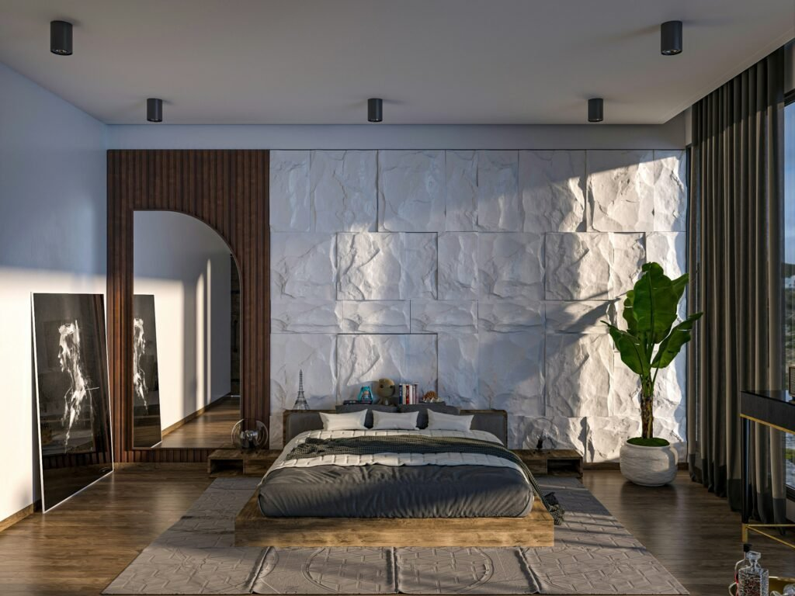
Final Thoughts
Mirror wall panelling is about more than reflection. It's a genuine transformation tool, whether the goal is drama, elegance, or just a little extra light in a room that's never quite had enough.
None of it requires a full-scale renovation or an unlimited budget. Even a single well-placed mirror, chosen with the right frame and finish, can shift how an entire room feels.